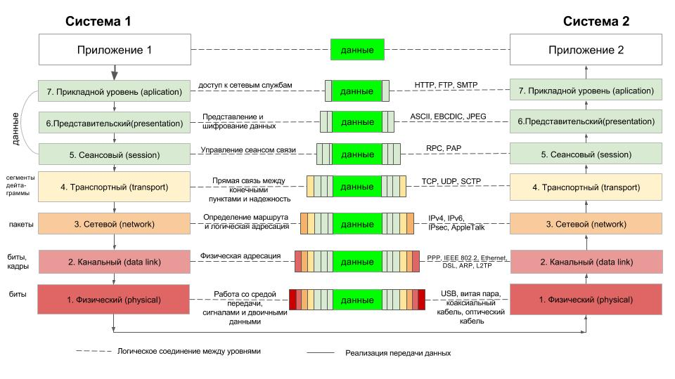
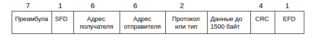
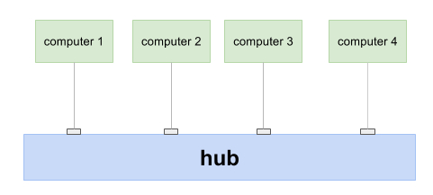
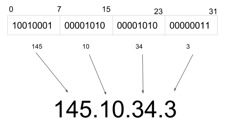
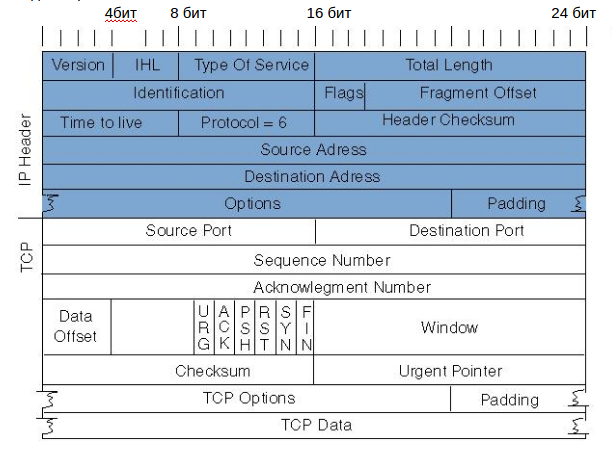
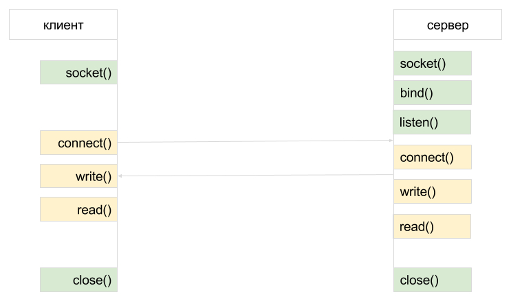
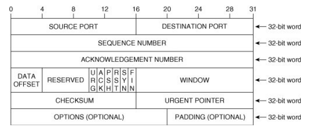

Сетевые протоколы
Я просмотрела несколько лекций на youtube про модель OSI, сетевые протоколы. И собрала основные термины, тезисы и определения. Предлагаю, для начала, отталкиваться от представленной ниже схемы (модели OSI).
На первый взгляд - очень устрашающе, но при детальном рассмотрении становится понятно, как устроена сеть и схема превращается в шпаргалку для наглядного представления работы сети. Оговорюсь, что пройдемся мы только по поверхности "Луны", не вдаваясь в подробности. Я не ставила перед собой цель погрузиться на дно изучаемой темы. Полагаю, что для расширения кругозора просмотренного и усвоенного материала вполне достаточно. И главное, есть фундамент для того, чтобы при желании углубиться в изучение модели, методов, принципов и проч. Также, в конце статьи-конспекта я оставлю все ссылки на ресурсы, откуда черпала информацию.
Что ж, начнем с взаимодействия протоколов в сети. Протокол - это соглашение, в котором описано в каком виде данные должны передаваться. Протоколы действуют на 7 различных уровнях.
- Физический уровень (physical)
- Канальный уровень (data link)
- Сетевой уровень (network)
- Транспортный уровень (transport)
- Сеансовый уровень (session)
- Представительский уровень (presentation)
- Прикладной уровень (application)
Каждый уровень решает свою задачу.
Физический уровень - управление средой, сигналом, кодирование потоков битов. Этот уровень решает задачу передачи данных локальной сети, иначе, отвечает за то, как должно работать железо, которое передает данные (описание железа)
Канальный уровень решает задачу физической адресации, передачи между двумя интерфейсами (описание протоколов, которые работают с этим железом).
Сетевой уровень отвечает за логическую адресацию, передачу между двумя хостами, передачу в гетерогенных сетях. В частности, IP, глобальная адресация.
Транспортный уровень отвечает за надежную доставку передачи между двумя приложениями, управление потоком байтов.
Сеансовый уровень отвечает за поддержание сеанса связи, позволяя приложениям взаимодействовать между собой длительно время. Уровень управляет созданием/завершением сеанса, обменом информацией, синхронизацией задач, определением права на передачу данных. Службы сеансового уровня обысно используются в средах приложений, в которых требуется использование удаленного вызова процедур.
Представительский уровень отвечает за преобразование протоколов и кодирование/декодирование данных. Запросы приложений, полученный с уровня приложений, он преобразует в формат для передачи по сети, а полученные по сети данные преобразует в формат, понятный приложениям.
Прикладной уровень обеспечивает взаимодействие сети и пользователя. Уровень разрешает приложениям пользователя иметь доступ к сетевым службам, таким, как обработчик запросов к базам данных, доступ к файлам, пересылке электронной почты. А также отвечает за передачу служебной информации, предоставляет информацию об ошибках, формирует запросы к уровню представления.
Протоколы работают один поверх другого. Протоколы верхнего уровня являются данными для протоколов нижнего уровня. То есть, каждый уровень оборачивается в заголовки и спускается на уровень ниже (протоколы инкапсулируются друг с другом). Некоторые протоколы работают на двух уровнях сразу. Некоторые протоколы связаны между собой. Например, физический и канальный уровни работают в тесной связке.
Ethernet
Работает на двух нижних уровнях. Обеспечивает передачу данных внутри локальной сети. Протокол с общей средой. На 1 уровне (физическом) описывается какими свойствами должен обладать кабель, максимальная длина, количество машин, которое можно подсоединить через него, какого рода сетевая карта должна передавать сигнал (параметры). Для передачи бита, в частности, используется манчестерский код.
В начале каждого такта может происходить служебный перепад сигнала, если нужно представить несколько единиц или нулей подряд. Так как сигнал изменяется по крайней мере один раз за такт передачи одного бита данных, то манчестерский код обладает хорошими самосинхронизирующими свойствами.
Предполагается совместное использование среды. Если две машины хотят одновременно что-то передать, происходит коллизия. Коллизию отслеживает сетевая карта. Если обнаруживается коллизия, то сетевая карта повторяет попытку через случайное количество времени. Таким образом избегается ситуация одновременной передачи. На канальном уровне предполагается описание форматов передачи данных. Что в этих битах надо передавать. Описан формат кадра.

Преамбула (7 байт) - стабилизация среды
SFD (0xab) - начало кадра
MAC адреса (broadcast, interface)
Протокол верхнего уровня
Данные - до 1500 байт
CRC-32 - контрольная сумма
EFD - конец кадра
HUB, Switch, ARP
При подключении к одному кабелю возникает несколько проблем: ограничена длина, количество подключенных машин (потому что возникают коллизии). Чтобы решить проблему с длинной, то есть с затуханием канала, были созданы простые сетевые устройства HUBы - ретрансляторы. У хаба есть несколько портов, он принимает сигнал на одном порту и применяет на все остальные, то есть ретранслирует его. Поэтому можно сделать сеть большего размера. Но коллизии при этом не исчезнут.
Чтобы уменьшить количество коллизий, были созданы устройства следующего уровня, которые называются Switch.
Switch запоминает на каком порту какой mac адрес у него находится. Поэтому, когда получает инфо с мак адресом, он ретранслирует его только на порт с мак адресом (не затрагивая другие). Другими словами, он делит сеть на независимые сегменты.
Проблемы, которые возникают с передачей данных в локальной сети:
Физические ограничения:
- Затухание
- Коллизии
Ограничение числа хостов:
- Сложность топологии
- Огромные таблицы коммутации
Несовместимость различных архитектур.
Можно увеличить количество Switch. Но тогда возникает вопрос о том, как передавать данные - сложность топологии. Из-за большого количества элементов сети, она начинает работать медленно. Поэтому, на определенном уровне, необходимо сеть делить уже с помощью маршрутизаторов.
Под несовместимостью различных архитектур предполагается, что просто так подключить сеть с ethernet и, например, сеть с wi-fi не получится, так как это несовместимые технологии.
Для объединения локальных сетей используется третий уровень (сетевой). На сетевом уровне у нас работает протокол IP.
Протокол IP
В сети IP есть маршрутизаторы. Они знают про IP адреса. Администратор прописывает в маршрутизаторе, какие IP адреса находятся в каждом из его портов.IP, маска сети и маршрутизатор по умолчанию прописываются по умолчанию.
Как происходит передача данных? Сначала IP сопоставляется с маской сети. Маска сети говорит, что, например, первые 3 байта относятся к данной сети. Если эти 3 байта совпадают с получателем, значит оба IP находятся в одном сегменте сети (на одном порту роутера). В этом случае нет смысла использовать протокол IP. Тогда работает протокол ARP, который распознает мак адрес и передает данные получателю внутри одного сегмента сети. Если компьютер определяет, что IP адреса отправителя и получателя находятся в разных сетях, то данный пакет передается маршрутизатору. Маршрутизатор может передать пакет другому маршрутизатору и так до тех пор, пока он не дойдет до точки назначения.
Задачи протокола IP
- Глобальная адресация
- Передача в гетерогенной сети (сегментация)
- Маршрутизация пакетов
С помощью Ethernet нельзя глобально передать данные, потому что они не обладают одной определенной структурой. Протокол IP решает задачу глобальной адресации, то есть дает уникальные адреса. Позволяет передавать данные в разнородных системах (геторогенных сетях).
Этот формат стоит читать в битовом представлении. Тогда получается 31 уровень. Если мы решим, что старшие 23 бита неизменны (маска подсети), то адреса этой подсети варьируются в последних 8 бит (255 разных окончаний). 34.1 - обычно адрес айпишника роутера, который организует маленькую подсеть. Каждый роутер строит таблицу маршрутов, знает как быстрее отправить данные на IP
Примеры IP адресов:
94.100.191.201 - один из адресов мейл.ру
127.0.0.1 - адрес локального компьютера (всегда)
94.100.190.0/23 - адрес подсети (значит, что первые 23 знака значащие, а остальные там нули, адресует группу компьютеров)
10.0.0.0/8, 172.16.0.0/12, 192.168.0.0/16 - private ip (неуникальные адреса) существуют из-за нехватки адресов. Используются для адресации компьютеров во внутренней сети. Пакет нельзя отправлять на такой адрес. Передача с этого адреса происходит не через внутренний, а через внешний IP, существующий у внутренней группы.
224.0.0.0 - 239.255.255.255 - multicast ip
IP дейтаграмма
При передаче по IP данные оборачиваются заголовками и получается IP дейтаграмма. Указывается версия, type of servie позволяет с разной скоростью поставлять данные, то есть оптимизировать пакетную маршрутизацию. В заголовке указывается полная длина. Это необходимо, чтобы маршрутизатор полностью смог прочитать заголовок. Есть поле source IP адреса и destination ip Адреса. Это айпишники, с которого и на который передаются данные. Time to live - каждый раз когда ваш пакет проходит через маршрутизатор у него уменьшается time to live. Когда он прошел 127 шагов, пакет отбрасывается. Это делается для того, чтобы избежать блуждающих пакетов в сети. Поле protocol служит для того, чтобы знать, какому протоколу верхнего уровня нужно передавать данные.
Алгоритм роутера (маршрутизатор)
- Получение дейтаграммы, определение IP получателя
- Поиск в таблице маршрутизации
- Не найдено - отбрасываем пакет
- Выбор наиболее приоритетного маршрута (по префиксу, по дистанции, по ширине канала)
- Передача дейтаграммы через нужный интерфейс
Есть маршрутизация статическая и динамическая. Статическая - каждый маршрутизатор сконфигурирован вручную. Если маршрутизаторов много, то вручную конфигурировать их неудобно. И здесь включается динамические протоколы маршрутизации. Администратор конфигурирует маршрутизатор, прописывая информацию только о его сетях. Но роутеры могут общаться между собой. Статическая маршрутизация - config
Внутренняя - RIP и OSPF
- Работает в небольших сетях
- Каждый маршрутизатор вычисляет полную таблицу маршрутов
Внешняя BGP и EGP
- Обмен маршрутами на уровне автономных систем (AC)
- Маршрутные политики
Внутренняя предполагает обмен данными, какие сети к ним подключены и в каком состоянии они находятся. Постепенно маршрутизатор строит полный граф сети. То есть, каждый маршрутизатор знает полную структуру сети, какой IP адрес на какой порт надо передавать и насколько далеко нужно передать. После того, как построен полный граф сети, маршрутизатор может найти кратчайший путь. Проблема возникает, когда сеть становится слишком большой. Слишком большой граф сети.
Внешняя. Представим провайдера, который еще называют автономной системой. Внутри провайдера работает внутренняя маршрутизация. Также у него есть граничный маршрутизатор, который подключен к внешнему миру. Таких маршрутизаторов меньше, и обмениваются они по своему протоколу BGP. Администраторы могут настраивать политики маршрутизаторов, то есть с кем хотим обмениваться, а с кем нет. Но результат тот же. У граничных маршрутизаторов все также, как и во внутренних, просто граф меньше.
DNS (domain name system)
Глобальная распределенная база доменных имен распределяет доменные записи на IP адреса и не только. У DNS протокола единственная функция спросить айпишник у домена. Перед обращением к серверу, сначала происходит запрос к DNS.
- /etc/hosts - локальные DNS записи имеют приоритет
- Домен - поддерево в пространстве доменных имен, домены обладают иерархией
- DNS зона (сегмент) - часть базы DNS, хранящаяся под единым административным управлением, зоны не перекрываются
- RR - resource record - данные, связанные с доменом
Как решалась проблема, что IP нужно запоминать? Система имеет список имен и их айпишников. Вы пишете имя, система подставляет IP, соответствующее имени. В unix системах эти записи хранятся в /etc/hosts. Хосты активно используются когда вам необходимо дать имя, но не хочется лезть в DNS. Например, имя локального компа прописать можно как раз в хостах. Также, вирусы любят прописывать в хостах имя, например, вк и свой айпишник. В этом случае, набирая в поисковой строке вк, открываться будет тот IP, который вирус прописал в хостах, а не сайт вконтакте.
Доменных имен стало много, соответственно пришло время хранить имена в базе данных. Почему нельзя хранить БД на одной машине? Это слишком сложно. Большое количество запросов. DNS обладает распределенной архитектурой.
При запросе от пользователя, данные передаются на DNS сервер (прописан провайдером, но можно воспользоваться другим при настройке). Если там IP не находится, то сервер пытается подняться вверх по уровню доменов. Корневые DNS сервера знают все. Перенаправляется запрос к DNS верхнего уровня, с верхнеуровневого доменного сервера приходит ответ, что нужно сходить в зону ру, например. Зона ру отправляет на сервер мейл, оттуда мейл отправляет айпишник...
Запрос к DNS есть рекурсивный и итеративный
Рекурсивный запрос предполагает, что то, что вы запрашиваете, вам вернется в ответ.
Итеративный запрос, когда машина сама ходит по всем серверам (в отличии от рекурсивного, где после запроса, сервер проделывает работу за вас). DNS сервер провайдера делает итеративные запросы.
Самая большая нагрузка на корневой сервер. Так как к нему много запросов. Чтобы сократить нагрузку, используется кэширование.
В DNS хранятся записи (не только IP).
Что не решает IP
- Невозможно адресовать конкретное приложение
- Нет надежной доставки данных
- Нет порядка дейтаграмм (нет последовательности доставки данных)
- Нет контроля потока
Протокол TCP (выше уровнем) решает все задачи, описанные выше.
Протокол TCP
Задачи протокола:
- Адресация приложения в пределах хоста (адресовать программу внутри машины)
- Последовательное двустороннее соединение (данные передаются последовательно)
- Надежная доставка (обработает все потери, искажения пакетов)
- Управление потоком (невозможность передать больше данных, чем на другой стороне система может потребить)
Порты:
- Well-known: SSH=20, FTP=21,22, HTTP=80, SMTP=25, POP3=110
- Привилегированные (<1024)
- Остальные (>=1024)
Сокеты (sockets)
- Серверные (bind, listen, accept)
- Клиентские (connect, send, recv)
Порт - это адрес программы внутри одной машины (в рамках одного IP адреса). Низкие порты предназначаются, как правило, для системных служб (привилегии суперпользователя необходимы). Высокие порты можно открывать от имени текущего пользователя.
Сокет - файловый дескриптор, в который можно писать и читать данные (почти как в обычный файл). Сокеты клиентские - последовательный ввод, вывод. Серверный - дескриптор для создания клиентских сокетов.
Сокет - пара IP и порт. За 80 портом закреплены веб сервера
TCP сегмент
В заголовок включается порт получателя и порт отправителя.
SEQUENCE NUMBER показывает номер сегмента в потоке. При передаче данных по TCP данные разбиваются на сегменты. У каждого сегмента есть свой номер. При последовательной передачи этот номер постепенно возрастает.
ACKNOWLEDGEMENT NUMBER - номер сегмента, который успешно дошел до получателя.
SEQUENCE NUMBER отправлен, например, с номером 3. Если в ответ пришел ACKNOWLEDGEMENT NUMBER с таким же номером (3), то означает, что сегмент дошел. Если номер меньше, значит оппонент еще не принял сегмент 3. С помощью SEQUENCE NUMBER упорядочиваются сегменты и появляется возможность надежной доставки.
Далее идет поле, в котором указывается длина заголовка. Указываются флажки TCP протокола. Они обеспечивают разные модификации. Один из часто используемых флажков - push - данные о том, что на стороне получателя данные не нужно буферизовать.
Window size - опция, которая позволяет управлять потоком передачи. В параметре показывается размер буфера, который свободен.
Checksum - позволяет проверить, что данные не были искажены. Если чексуммы совпадают, то сегмент передан правильно. Если чексуммы не совпадают, то протокол отбрасывает пакет и отвечает со старым ACKNOWLEDGEMENT NUMBER. Пакет, который не дошел до получателя будет отправляться повторно до тех пор, пока не будет получен ответ с нужным ACKNOWLEDGEMENT NUMBER. Если искажена чексумма, тогда ошибка не будет обнаружена.
Важные флажки SIN, ACK, FIN используются при управлении соединением. Чтобы установить соединение, нужно договориться об SEQUENCE NUMBER. Для этого в первом сегменте отправляется флаг SIN
TCP handshake

Round trip time (0.5ms/150ms) - время путешествия туда и обратно. Актуально кэширование соединения.
SIN - дает понять о том, что это TCP соединение. Оппонент в момент приема соединения резервирует данные и отправляет флаг SIN и свой флаг ACK. В этих значениях первоначально передается значение SEQUENCE NUMBER. И после этого отправляется сообщение о том, что SIN и ACK приняты. После этого происходит соединение. Схема - тройное рукопожатие.
Есть бесплатные сетевые утилиты, например, Wireshark для отслеживания работы TCP
TCP для программеров доступен через клиентский сокет. Для создания TCP сервера сначала необходимо импортировать библиотеку сокетов. Подробнее о сокетах будет в статье о web серверах (статья в процессе написания).
HTTP
Методы:
- OPTIONS - запрос методов сервера (Allow)
- GET - запрос документа (условный get)
- HEAD - аналог GET, но без тела запроса
- POST - передача данных клиент
- PUT - размещение файла по URI
- DELETE - удаление файла по URI
- TRANCE, LINK, UNLINK, CONNECT - редко используются
Коды состояния:
1хх - информационные
2хх - успешное выполнение
200 - ок
204 - NoContent (только заголовки)
206 - PfrtitialContent (часть ответа)
3хх - перенаправления
301 - Moved Permanently (seo, кэширование)
302 - found (логика работы сайта)
304 - Not Modified (при условном GET)
4xx - Ошибка контента
400 - Bad Request (размер, формат)
401 - Unautorized (запрос авторизации)
403 - Forbidden (allow, deny)
404 - Not found
408 - Request Timout (на чтение)
418 - I`m teaport
5xx - ошибка сервера
500 - Internal Server Error
502 - Bad Gateaway (проксирование)
503 - Service Unavalible
504 - Gateway Timeout
505 - HTTP version not supported
507 - Insufficient Storage
Заголовки HTTP запросов построены в виде ключ: занчение, после которых два пробела (два перевода строки), что и означает конец сообщения.
В первой строке содержится метод запроса, часть URL (вся, кроме домена), путь и версия HTTP запроса.
Host - указание домена, вирт.хостинг
User-Agent - описание клиентов
Accept* - поддержка MIME типов, кодировок, языков и тп
Cookie - куки для данной страницы
Referer - текущая страница (существует для сбора статистики, проверяя откуда мы пришли)
if-Modified-Since - условный GET
Connection - управление соединением
Content-Type - MIME тип документа (строка, чем она является)
Content-Length - размер документа
Content-Encoding - кодирование документа
Date - текущее время сервера
Expires - время актуальности документа
Last-Modified - время изменения файла
Set-Cookie - установка кук для данного URI
Connection - управление соединением
MIME типы - унифицированное название для разных типов данных.
text/html
text/css
text/javascript
image/png
video/mp4
application/json
Пример HTTP запроса:
GET /path/page.html?a=1&b=2 HTTP/1.1
Host: mydomain.com
Connection: keep-alive
Accept: text/html
User-Agent: Mozilla/5.0 (Macintosh; Intel Mac OS X 10_10_4)
Referer: http://mydomain.com/page0.html
Accept-Encoding: gzip, deflate
Accept-Language: ru-RU,ru
Cookie: j4i3clrjqqbopkn1nucg1lg0; tncu_cu=1; tncu_any=1
If-None-Match: "2b544b-4cf7-2a98c2c0”
If-Modified-Since: Tue, 20 Apr 2010 05:15:31 GMT
Стоит отметить, что первым всегда обращается с запросом клиент. Сервер к клиенту первым обратиться не может.
Пример HTTP ответа:
HTTP/1.1 200 Ok
Date: Wed, 23 Sep 2015 10:09:09 GMT
Content-Type: text/html; charset=UTF-8
Expires: Wed, 23 Sep 2015 10:09:09 GMT
Last-Modified: Wed, 23 Sep 2015 10:09:09 GMT
Set-Cookie: yp=; Expires=Sun, 25-Sep-2005 10:09:09 GMT;
Path=/
Set-Cookie: yp=; Expires=Sun, 25-Sep-2005 10:09:09 GMT;
Domain=.www.yandex.ru; Path=/
Content-Encoding: gzip
Content-Length: 12032
В ответе сервера в первой строке указывается тот самый код ответа (состояния). В последнем заголовке указывается какое количество данных нам пытаются отправить (длина содержимого) для того, чтобы ориентироваться сколько данных нам будет отправлено, сколько нам читать и можем ли мы вычитать именно столько. С помощью этого поля браузер пытается вычислить, а не отправляют ли нам слишком много данных, а также может проверить, пришли все данные или нет.
HTTP согласование содержимого. При отправки запроса, дополнительно отправляются заголовки accept (accept-Charset, Accept-Encoding, Accept-Languages, User-Agent). Это означает, что клиент готов принять такую-то кодировку, такую-то раскладку символов, такие-то языки, такие-то типы файлов и тд. Браузер тем самым сообщает серверу, что он умеет. Сервер обязан поступить в соответствии с этим. И выдать заголовок very. Таким образом согласовывается содержимое. Например, переходя на google с русской ОС, вы попадаете на google русский. Браузер отправил серверу данные о том, что вы используете русский язык и сервер в свою очередь приоритетно отправил вам страницу на русском языке.
Управление соединением. При отправке запроса можно послать connection двух типов: close и keep-alive. Первый означает, что после получения ответа можно закрыть соединение (имеется ввиду TCP соединение). А второй предполагает, что соединение закрыто не будет. Например, при отдаче html страницы сервер должен еще подгрузить несколько картинок. И для того, чтобы не тратить время на несколько соединений, keep-alive позволяет по одному соединению отправить и html и картинки многое другое.
Кэширование. Мы можем к заголовку GET добавить expires. Например, мы запрашиваем у сервера данные и просим их прислать только в том случае, если они изменились после указанной даты в заголовке expires. Если данные не изменились, то в ответе сервер пришлет заголовок с кодом 304 Not Modified.
Cookie. Возможность хранить какую-то индивидуальную информацию в браузере. При повторном обращении, если у нас указаны были cookie, у нас в запросе будут указаны cookie (в виде ключ - значение).
Перенаправления. Они хорошо работают с заголовками set-cookie. То есть, если прийти, например, на яндекс, то сервер выделит куки, в ответе вернет set-cookie, перенаправит на тот же яндекс, но с куки, то есть, неким образом нас авторизует и в дальнейшем будет знать, что это мы "ходим" по яндексу. Также редирект используется например, при публиковании поста. Вы отправляете POST запрос, а сервер вас редиректит на ту же страницу, но с уже опубликованным постом.
Помимо HTTP существует защищенная версия HTTPs. Последний протокол использует два инструмента для защиты. С одной стороны это SSL/TLS протокол, который обеспечивает шифрование данных, то есть данные отправляются не в явном виде. Второй инструмент, который обеспечивает защищенность данных - подпись цифровым сертификатом. Существует два вида сертификатов: публичный (pablic), приватный (private) ключ. Публичный ключ - это когда при первом обращении по https вы отправляете запрос получателю с вопросом, поддерживает ли он данный протокол. Если поддерживает, то вы запрашиваете у него публичный ключ. Публичный ключ своего рода документ, удостоверяющий личность. Как наш компьютер понимает, что отправленный нам ключ с информацией о подлинности сертификата не фейк? В каждой ОС есть встроенное хранилище ключей/сертификатов, которое поставляется производителем ОС. Если подлинность ключа подтверждается, мы запрашиваем приватный ключ, которым мы будем подписывать отправленные сообщения. Приватный ключ имеет срок годности. Он валидный до определенного числа. Сделано это в целях безопасности. Этот ключ также содержит информацию, каким образом будут шифроваться данные. Два эти подхода увеличивают защищенность.
Текстовое сообщение, похожее на текстовый файл
MIME позволяет в одной сущности передавать несколько документов.
Задачи:
- Передача не ASCII текста через ASCII канал
- Передача не текстовых приложений
- Передача текста из нескольких частей
- Передача не ASCII заголовков
Вот такой получился краткий конспект. Позднее я планирую посмотреть еще несколько материалов на эту тему и, возможно, дополню эту статью. Полагаю, что некоторые аспекты все же стоит изучить подробнее и раскрыть тему более широко. Но у меня все впереди :)
Материалы по теме:
- Сетевые протоколы. Автор: НОУ ИНТУИТ
- Веб-разработка. Введение, сетевые протоколы. Автор: Технострим Mail.Ru Group
- Сетевая модель OSI. Википедия
- Web Testing. Урок 2. Протокол HTTP. Структура запроса/ответа. Автор: ITVDN
Опубликовано: